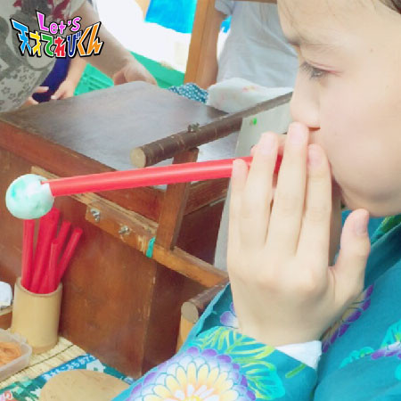
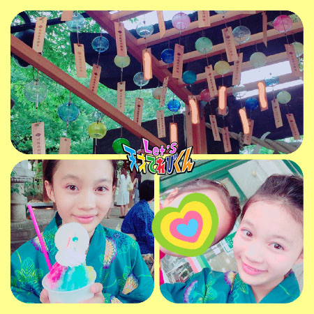

○○県の思い出［皆川寧々］
みっなさ～ん、
こんばんは、＊寧々＊です (｡・u・｡)/☆
長かった夏もあっという間に終わって、
季節は秋になりますね！
秋といえば。。。
「 読書の秋！ 」「 食欲の秋！ 」「 スポーツの秋！ 」
学校の行事も、運動会、連合運動会、学芸会etc・・・
目白押しでワクワクします！
さて、今回のテーマは
『 ◯◯県の思い出 』！！
近いのになかなか行かない
『 埼玉県の思い出 』です(*^u^*)/
夏休みに埼玉県川越市に行ってきました。
江戸時代に城下町として栄えた街並みが残る川越市。
お母さんが「 せっかくだから浴衣（ ゆかた ）を着て行ったら 」と言い出し、
祖母が浴衣や帯を探して着付けてくれました。
『 城下町×浴衣 』で江戸時代にタイムトリップした気分が味わえて、
テンションが上がりました↑↑q(｡・u・｡)p↑↑
お昼はうなぎを食べました。
うなぎ屋さんででてきた、うなぎの骨のおつまみがすごくおいしくて
たくさん食べてしまいました笑
お昼のあとは、駄菓子屋横丁に行きました。
たくさんの駄菓子屋さんが並んでいて、
あっちに行ったりこっちに行ったり、
目移りしてしまいました (((●´u｀●)))

↑↑↑
途中、江戸飴細工（ あめざいく ）に挑戦してみました。
ストローの先についている飴をふくらますのですが、
ゆっくり、優しく吹いてふくらます！
というのがなかなか難しくて、
結果、これ以上ふくらみませんでした笑
上手な人は風船みたいに
顔の大きさくらいまでふくらませるみたいです！スゴイ！
でも、一番思い出に残っているのは、
川越氷川神社に行きお参りをして、
たくさんの風鈴を見たことです。
色とりどりの風鈴が
｢ リリリーン。リリリリーン。 ｣
と音をたててゆらゆらしていた風景が
とても心に残っています。
風が吹くたびに風鈴につるされた短冊が
ひらひらと動いていて、それがまたもぅ～きれいでした！
おうちにも風鈴が欲しくなり、
限定のオレンジ色の風鈴を買ってもらいました。

駄菓子屋横丁から氷川神社までの道のりは
意外と長くて、とても暑い日だったので、
神社で食べたかき氷も思い出です。
上に風鈴の絵が描いてあるおせんべいがのっていてかわいくて、
とてもおいしかったです！！
今度は大好きなアニメの聖地巡りに、秩父や、
他県だと飛騨や琵琶湖にも行ってみたいなぁ
と夢がふくらみます (●・u・●)
Let's タイムトリップ
それでは＊寧々＊でした♪
投稿者:皆川寧々 | 投稿時間:18時45分 | カテゴリ：てれび戦士 | 固定リンク